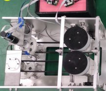

Academic bedside robots · hust_guidewire_li2024
HUST wire robot
HUST 2-DOF friction-wheel guidewire platform for autonomous navigation (centerline-guided)

1 / 5


- Family
- Academic bedside robots (academic)
- Devices
- 0.035 in hydrophilic guidewire (Terumo)
- Degrees of freedom
- 2
- Push
- Friction rollers
- Twist
- Rolling between rollers
- Tested up to
- Phantom
- Sim-to-real
- None found — No simulation-trained controller found for this robot.
Testing
- Highest level
- Phantom
- What was tested
- 96 trials: four methods (manual, trial-and-error, centerline-guided, DTW variant) on several routes, eight repeats per route
- Key numbers
- Autonomous methods beat manual in trajectory smoothness, length and wrong-branch entries in a static model; manual was fastest (platform speed-limited)
Mechanism
- Push (translation)
- friction-roller (pair of friction wheels with silicone layer, belt-driven from one motor)
- Twist (rotation)
- Wheel pair translated in opposite directions by a screw-driven motor, rubbing the wire to rotate it (Fig. 1d)
- Device range
- 0.035 in
- Target anatomy
- clinical-grade interventional training model (arch and branches)
Sensing and interface
- Force sensing
- none
- Leader and haptics
- none (autonomous; manual baseline also run)
- Imaging
- No X-ray: Aurora electromagnetic tip tracking replaces imaging
- Sterility
- N.R.
Size
- Footprint (mm)
- N.R.
- Mass (kg)
- N.R.
Simulation
- Simulation model
- none found
- Sim-trained controller
- none found (S7b evidence: sim_to_real_tested = no)
Versions
- Lineage
- li2024_vascular (ICRA 2024)
Sources
- Vascular Centerline-Guided Autonomous Navigation Methods for Robot-Lead Endovascular Interventions · 2024 IEEE International Conference on Robotics and Automation (ICRA), 2024 · doi:10.1109/icra57147.2024.10611329 [li2024_vascular]
Notes
- Notes
- Autonomy is rule/centerline based, not learned in simulation. F4 2026-10-14: li2025_sensorfree (RA-L 2025, same group, full) estimates guidewire shape and contact force from a graph shortest path plus a COMSOL finite-element model; "the guidewire was manually inserted into the phantoms" (Sec. IV-A), so it uses no robot and adds no picture.
This record
- Read level
- partial — partial (li2024 text)
- Picture
- li2024_vascular Fig. 1(a) region 1 (platform, top view), ICRA 2024, doi:10.1109/ICRA57147.2024.10611329 ↗ — licence: publisher copyright; grade C
- Picture changes
- native extract (1030x694 figure); cropped inside the yellow dashed box and below its number tag; not upscaled
- Found by
- academic: Search of academic bedside robots.
- Data
- JSON · YAML:
records/robots/hust_guidewire_li2024.yaml - Correction
- Suggest a correction [repository not created yet]